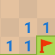
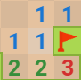

devox \ posts \ post id in database
-/ Minesweeper AI, not so good but realistic.
After seeing some videos of AI resolving minesweeper, I was a bit disapointed when looking at the strategies used.
Yeah they are really fast, but they all use exactly the same way of solving it: backtracking.
A recursive technique which consists on building your solution one step at a time, and skipping the actual opportunity as soon as it doesn't fit your constraints.
Involving a lot of things to remember, this strategy is not something that is used by humans (maybe some aliens can do it in the end where there are like 2 or 3 mines left).
So, as excellent as it can be, it is only based on one strategy, which is kinda boring in the end.
$ What is the idea then ?
I would like my AI to resolve it like a human would, but, how do we resolve a MineSweeper game ?
I played a little bit to realise how I was dealing with the different situations, the strategy that I used is quite simple:
-
Looking for locations with the same number of unmarked tiles and remaining undiscovered bombs.
We can then simply mark all the tiles around without even thinking.
>
-
Then we'll search for tiles that have the same number of marked bombs around and amount of bombs written on them.
This way, we can just discover all of the remaining tiles around with the certainty that they are safe.
Using theses tro first strategies can make you finish really simple games, when increasing the amount of bombs, the winrate will drop as you'll need to gamble a lot more.
>
-
And finally we have the pattern recognition, we are looking for some simple patterns that assure the placement of 1, 2 or even 3 mines sometimes !
A really helpful website listing patterns can be found here, it will explain them soo much better than me. But I'll explain one here anyway.
The 1 at the top give us the certainty that there is a mine on the two top-most green cells.
By discovering this, we can peacefully unveil the bottom cell because of the second 1.
Once we discovered some new tiles, we just have to repeat theses steps again an again until the end of this MinseSweeper grid !
$ The implementation
I decided to use Python, this AI is the first "serious" project i've done since I started programming, so I wanted to use a language that I was familiar with.
As you could expect, the code is not very well written, but I'll try to explain it as good as possible !
First of all, we need to implement the game, we'll use Tkinter for graphics and that's all.
Creating the board is really simple:
class Board():
def __init__(self):
self.board = []
self.finished = False
for i in range(HEIGHT):
self.board.append([])
for j in range(WIDTH):
self.board[i].append(0)Then we just randomly add bombs:
for i in range(MINE_AMOUNT):
while True:
rx=random.randint(0, WIDTH-1)
ry=random.randint(0, HEIGHT-1)
if self.board[ry][rx]!="x":
self.board[ry][rx]="x"
break